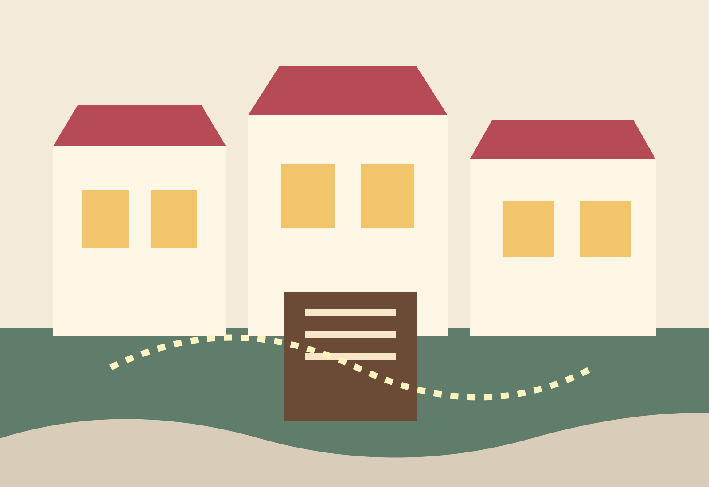

Small-town social web · low-lore entry · request access
Harbor Society
A coastal town where old families, new arrivals, gallery openings, council favors, second chances, and local gossip turn ordinary errands into playable scenes.
First face path: start with a wanted tie or open claim, then step into a public town scene without a lore test.
Relaxed pace
7 wanted ties
Profile app

Play readiness
What makes this playable now
Public signals point toward first scenes instead of dashboard metrics.
Open connection hooks
Families, exes, coworkers, and neighbors that make a first face less lonely.
Scene hubs ready
Businesses, civic spaces, and waterfront places with easy first-thread premises.
Claims worth checking
Open businesses, family names, and local roles with story pressure.
Open scenes
Social doors into the town
Scene hubs
Places where threads start
Businesses and civic rituals carry the pressure; the town does not need a battle map to feel alive.
First-face path
Enter through a connection, not a lore test
Pick a social opening
Wanted ties and claims tell you who already needs your face.
Read the premise
Five minutes of town context should be enough for a first draft.
Request access
Start with a profile app, then settle into public scene hubs.